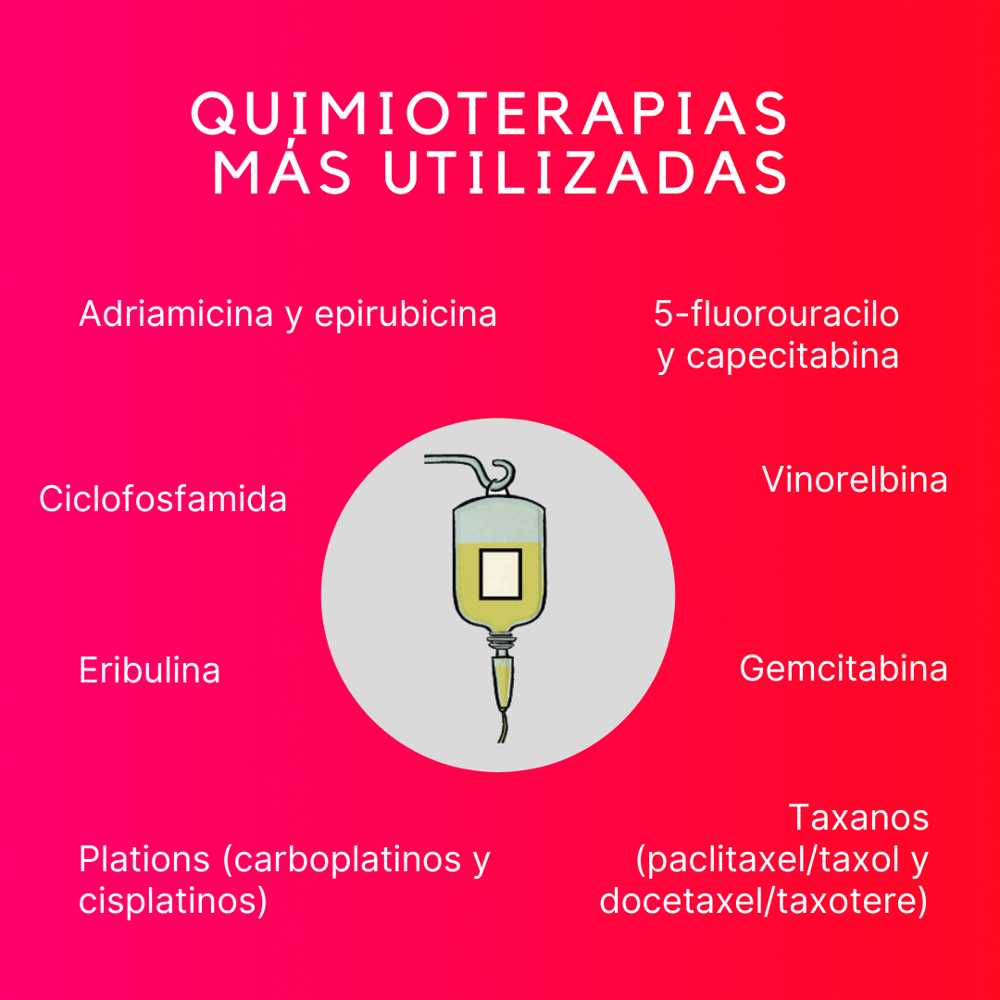

El cáncer de mama es una enfermedad que afecta a las células del seno, generalmente de las glándulas mamarias. Es uno de los tipos de cáncer más comunes entre las mujeres, aunque también puede presentarse en hombres.
¿Qué es el cáncer de mama?
Prevención
Existen varias formas de prevenir el cáncer de mama o, al menos, detectar a tiempo los síntomas. La autoexploración mamaria, las mamografías regulares y un estilo de vida saludable son algunas de las medidas recomendadas.
- Autoexploración mensual
- Mamografías anuales a partir de los 40 años
- Evitar el consumo de alcohol y tabaco
- Realizar actividad física regularmente
Tratamiento
El tratamiento para el cáncer de mama varía dependiendo del tipo y estadio del cáncer. Las opciones incluyen cirugía, quimioterapia, radioterapia y terapias hormonales.
Cirugía
Se puede realizar una cirugía para remover el tumor o la mama afectada.
Quimioterapia
La quimioterapia ayuda a destruir las células cancerosas en todo el cuerpo.
Radioterapia
Usada para eliminar cualquier célula cancerosa restante después de la cirugía.
Tratamientos hormonales
Bloquean las hormonas que alimentan el crecimiento del cáncer.
Apoyo emocional
El diagnóstico de cáncer puede ser abrumador. Es fundamental contar con apoyo emocional durante el proceso. Los grupos de apoyo, la terapia psicológica y el acompañamiento de familiares y amigos juegan un papel clave en el bienestar del paciente.
Video Informativo
Contacto
Si necesitas más información o deseas contactar con profesionales especializados, no dudes en escribirnos.